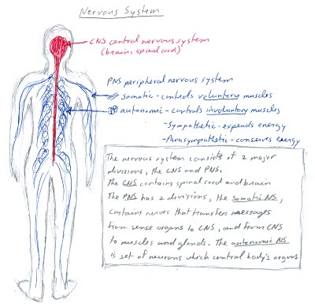
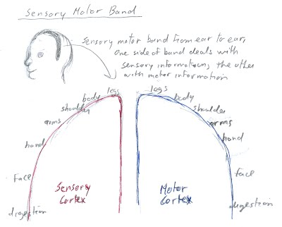
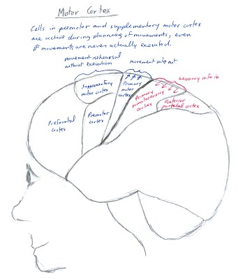
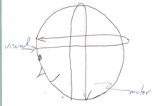
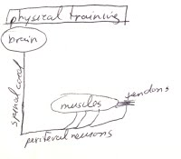
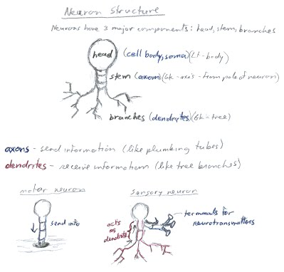
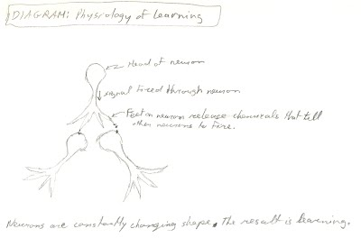
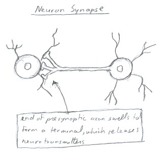

|
ch3 Self-Directed Coaching Manual
Ch3) PHYSIOLOGY OF NERVOUS SYSTEM AND BRAIN
BIOLOGICAL PSYCHOLOGY FOR SPORT To understand how our experiences, “minds”, and behavior work during sport, it may be beneficial to understand how the brain and the rest of the nervous system generate these phenomenon at the biological level. This is the field of biological psychology. I will start with a discussion on nervous system structure, and then a discussion of how bio-chemical information gets transferred through the nervous system. The nervous system consists of two major divisions, the central nervous system and the peripheral nervous system. Refer to diagram “Nervous System”, figure 3-1. The central nervous system contains spinal cord and brain. The peripheral nervous system has two divisions, the somatic nervous system, controls voluntary muscles, while the autonomic nervous system controls involuntary muscles. Figure 3-1: Nervous System 
PHYSIOLOGY OF CENTRAL NERVOUS SYSTEM The central nervous system consists of a brain and spinal cord which contain neurons that trigger all our body functions. They are encased in bone, keeping them protected. It is assumed that if anything in our central nervous system is damaged, it cannot be fixed, with some exceptions. Brain We will now concentrate on how the brain part of the central nervous system operates. Our brain receives and sorts a steady stream of sensory information, and sends out chunks of information back to our bodies. This activity takes place in an area like a head band, stretching from one ear to the other. Scientists have located the areas in the band where sensory information is received, and motor information sent, for our bodies. See diagram “Sensory Motor Band”, figure 3-2. Figure 3-2: Sensory Motor Band 
Our brain can influence sport performance in many ways. We have architectural twins in our brain that work simultaneously when we think and/or do physical, motor, movement. One twin area fires off when we imagine doing a body movement, while the other fires off while actually doing a body movement. The only difference between these architectural twins, which are located right next to each other, is that one that fires off during body movements has connections to the motor band in our brain. The principle cortical areas of brain that control how our body moves are in diagram “Motor Cortex”, figure 3-3. Sensory information is received on the back side of the motor band, while motor information and execution demands are in the front side of the motor band. The primary motor cortex sends the motor commands to the spinal cord, while the cells in the premotor and supplementary motor cortex are active during planning movements, even if movements are never actually executed. Very generally, the prefrontal cortex responds to sensory signals that lead to movement. The premotor cortex is active during preparations of movement. The supplementary cortex is active during preparation before series of rapid movements. Figure 3-3: Motor Cortex 
On a practical level, these architectural twins have interesting consequences. We can imagine doing motor activity and therefore refine a skill without actually doing it. Another interesting consequence is that we can often feel ourselves doing the sport, just by watching someone else doing it. Hence the saying “learning by osmosis”. So we can pick up a lot just by watching a good example; however, the mind is not selective, so if we watch a bad example, we will learn the bad example “by osmosis” as well. The most important consequence of our twin brain architectures, is their influence on each other. They are identical twins, so when one changes, so does the other. When we imagine and feel ourselves doing a physical activity properly, it will increase the probability of the actual body movement working properly. The “during activity area” is highly influenced by sensory information and emotions present, but we can increase the probability of it firing off properly by ensuring the “before activity area” was firing off properly. I use the term “firing off”. Let me explain this further. Our brain and nervous system are composed of neurons which “fire off” electronically using chemical reactions. This brings us to metabolism in brain. Metabolism is the rate of sugar we consume in our brain. Sugar fuels the firing off of neurons. The study of metabolism in the brain gives us information on how the brain works when we are performing tasks. One way to measure metabolism is with brain scans that show which parts of the brain are being used while performing a specific behavior. This is done by attaching a die to a sugar, and then tracing colored sugar’s movement as it is metabolized. In general, motor information moves up and down across the brain, while visual information moves from front to back, eyes to occipital lobe, when analyzing information. This is shown in diagram “Metabolism of Motor and Visual Information”, figure 3-4.  More specifically, metabolism will vary depending on sports requirements. Lets start with sport requiring high concentration, such as ski racing. Metabolism requirements would have us decrease metabolism in emotional center, while an increase metabolism in rest of brain. We can achieve this with pre-planned priming rehearsals, which by definition will ignore emotions. Now lets do the opposite and consider sport requiring low concentration, such as long distance running. Runners are in a trance-like state, with eyes half shut, and therefore are highly suggestible. Metabolism requirements would have us decrease metabolism of emotional center, and a decrease metabolism in rest of brain. We achieve this with relaxation procedures. Overall, metabolism is evident when we are thinking about sport, and/or are having emotions. So far I have explained how to turn off emotions, basically by ignoring them, and thereby decreasing metabolism in the emotional centers. Emotions are not all bad, and can influence sports performance in positive way as well. A positive mood affects pathways that increase our overall efficiency and control of the brain. For example, if you are engaged to be married, it’s a good time to compete. Spinal Cord Now lets consider the other important part of our central nervous system (CNS), called our spinal cord. Our spinal cord stretches from the base of our brain, through to our tail bone. It is encased with many vertebrae bones, so it is both protected and can physically move to some degree. Every body part has a unique connection to a vertebrae in our spinal cord. These connection cables are called axons. Axons give and receive information between body parts and spinal cord. Sensory messages enter spinal cord from back, and are sent up our spinal cord to our brain where they are analyzed. Then our brain sends a message back to the spinal cord, which in turn sends commands through the front side of the spine to that body part. This results in a constant communication between the spinal cord and brain, and the spinal cord and the body parts. Effectively, the spinal cord is middle management. The brain gives managerial orders in bursts, while the spinal cord executes them. Our so-called “muscle memory” is physically located in the spinal cord. At least it starts there, giving commands to the peripheral nervous system. The biggest advantage of our spinal cord is that we can program very fast, skilled movements right into it. This way, we do not need to send a signal up to our brain for every little thing, which takes time, making fast movements physiologically impossible. This is why we all have our unique “gait”. No matter what sport we try, we always look like ourselves. The reason for slow communication between brain and spinal cord is because it occurs neuro-chemically. The longer the distance of travel, the longer the wait state. We can notice this wait state when we stub our toe. We hear the crack, and then a few moments later we start jumping around in pain.
PHYSIOLOGY OF PERIPHERAL NERVOUS SYSTEM (PNS) Our peripheral nervous system (PNS) is a branching neurological structure, stemming from our spinal cord. The neurons of this neurological structure, attach to muscles and tendons, to get them to tighten and relax. They pick up sensory information from the environment, as well as from within our body. They also send and receive information from all the body’s organs. The peripheral nervous system consists of two parts, the somatic nervous system and the autonomic nervous system. Somatic Nervous System The somatic nervous system controls our voluntary muscles. It contains nerves that transfer messages from sense organs to central nervous system, and the central nervous system to muscles and glands. See “Axons Attached to Muscle”, figure 3-5. The best way to understand what somatic system can do in sport, is with examples. Figure 3-5: Axons Attached to Muscle 
Let’s say we want to tighten our muscles. What happens in the peripheral nervous system to make this happen? Recall, that our body is a branching architecture, so it is important to consider the order in which things tighten up. If we tighten our elbow, our hand will flop. We have to think of our hand to tighten it. If we move our fingers, the rest of our arm tightens to support our fingers. Given the above considerations, let’s say we want to quickly tighten our muscles. It follows that we should focus on the external point we want to tighten first. For example, if we are skiing on ice, we may want everything tight, from ankles to buttocks. To accomplish this we would focus on ankles first, then knees, and so on inward. Now let’s consider what happens in our PNS when we change our body position. To move our body in a wavelike manner, we focus on moving trunk first, and then focus in sequence on every joint outward. Focus from inside to outside. To change the movement of an extremity fast, we make the change by focusing on that outward extremity first. Focus from outside to inside. Now lets consider the phenomenon of super human strength. Super human strength happens in highly fearful situations. Normally when our muscles tighten, our tendons tighten as well to prevent injury to ourselves. During super human strength phenomenon, the neurons attached to these tendons send inhibitory signals instead of excitatory signals, so the tendons do not tighten. We cannot control this phenomenon. It is something that is hardwired in us to save us from grave danger. Another thing that we have hard wired is self-paralysis, caused by muscle fatigue or injury. When our muscles become fatigued, stop messages are sent from the spinal cord to those muscle groups. This is a wired-in defense mechanism designed to prevent injury. If your body receives a strong jolt, from falling or a body check, this defense mechanism will paralyze the limb affected. If there is no consequential injury, we will regain use of your limb in a few minutes once your body’s spinal cord and brain start receiving healthy signals from the jolted limb. This is an important consideration during injury rehabilitation as well. When our injured area is fully healed, it will very quickly return to its original strength and flexibility. So if we are not feeling power come in quickly and naturally in our limb, more exercise is only a waste of time, and perhaps even prolongs recovery. Same with flexibility. The surrounding tissue will maintain its tightness to protect the injured area, no matter how much effort is spent loosening it. Moral of the story, is to listen to our bodies, nurturing change, not forcing change. Now let’s assume we are healthy, and simply want to increase our power and strength. Muscle strength can be increased by creating healthy muscle cells, or by increasing neuron firing rate and dendrite connections to the muscles. To teach neurons attached to your muscles to increase firing rate, we concentrate on a specific muscle group while tightening it. Increasing firing rate, increases the number of excitatory signals the muscle receives in a given period of time. To increase the number of dendrite connections to a muscle means that there are more places in a muscle receiving an excitatory signal, causing the muscle as a whole to tighten more sharply. Concentrating on the muscle during physiotherapy or workout will create this effect. In summary, when physical training, if we want to change the quality of muscle cells themselves, then we train with distractions, such as music or video. However, if want to increase the number of neural connections to the muscles, then we concentrate on specific muscle group(s) while training. When performing our physical activity, if we want more power for a short period of time from a specific muscle group, then we focus on that muscle group, to increase the firing rate of neurons, and hence the power of the muscle. Autonomic Nervous System The autonomic nervous system is set of neurons which control the body’s organs, the involuntary muscles. It has two systems, the sympathetic and parasympathetic. The sympathetic system expends energy, encouraging our bodies to move, while the parasympathetic system conserves energy, encouraging our bodies to relax, grow and heal. The sympathetic nervous system consists of nerve connections primarily in thoracic and lumbar regions of spinal cord. Special axons extend to body’s organs, preparing body for “fight and flight” activities. They increase heart rate and breathing rate, while decreasing digestion. The name “sympathetic” is given because all nerves are closely linked, acting like a single system, “in sympathy” with one another. In contrast, the parasympathetic nervous system has functions opposite sympathetic nervous system. “Para” means “beside” or “related to”. It is also called craniosacral system because its nerves originate from cranial nerves and sacral spinal cord. Long axons extend to organs, which operate independently, not “in sympathy” with each other. Parasympathetic activity decreases heart rate, increases digestion rate, and in general promotes energy-conserving, non-emergency functions.
PHYSIOLOGY OF NEURONS Neurons at Micro Level Our brain and nervous system is composed of cells called neurons. Neurons have 3 major components, the head, stem and branches, as seen in my stylized drawing “Neuron Structure”, figure 3-7. The head is called the cell body, or soma. “Soma” means body in Latin. The stem is called axon, from Greek word “axis” because it comes from the pole of the neuron. Axons tend to send information, and look like plumbing tubes. The branches are called dendrites. This is from Greek word “tree”. They look like tree branches and receive sensory information. Broadly speaking, sensory neurons have branches that pick up information and then send it to the head of the neuron through an axon, while motor neurons send information through the axon to muscles and tendons. Neurons never physically attach to each other, but they are always changing shape and form, shown in diagram 3-9, “Physiology of Learning”. Figure 3-7: Neuron Structure 
Figure 3-9: Physiology of Learning 
So if neurons do not physically grow together, how do they communicate? Neurons communicate to each other by sending a message from their head, through their stem and then dendrites. The dendrites send chemical signals to the head of another neuron in close proximity. If the other neuron understands the chemical signal, then it will fire off, sending its message. We cannot change the speed of firing, meaning, the speed at which the message goes down the stem. However, we can increase the frequency of firing. The result is that our neuron’s message is heard more frequently, and therefore has more powerful consequences. In diagram “neuron synapse”, figure 3-8, we see Neuron A, which fires an electrical signal. In the synapse, the area between the neurons, one of A’s connections touches a receiver of Neuron B. Now Neuron B receives a chemical charge which triggers an electrical signal in it. That signal gets passed to Neuron C and on and on. If the connection between A and B is made often enough, the bond between A and B grows stronger. Figure 3-8: Neuron Synapse 
Overall, our brain has billions of these neurons, also called nerve cells. Many have thousands of connections through which they send signals to neighboring neurons. Advanced supercomputers cannot map potential pathways. Unlike cells in our body, neurons do not divide. They age, and some shrink and die. By age 65 to 70 years, they can become so feeble that they cannot transmit electrical charges efficiently. But even then billions of neurons are still remaining. They sprout new synapses, forming new connections with one another. We can encourage synapse growth by keeping ourselves stimulated and challenged. Neurons at Macro Level Now I will discuss what the nervous system can do at the macro level. Overall athletes need a keen understanding of their body functions, especially with respect to our biological clocks, because at different times, our bodies overall power and abilities vary. Our body’s nervous system carries a daily, monthly, seasonal and yearly biological clock. All body processes function best when the biological clock is set properly. So when we have jet lag, it is important to reset our biological clocks. There are a number of ways to do this. Chemically, the natural product Melatonin, can reset the brain’s sleep-wake cycle, but it does not affect all our body processes, which may important for an athlete. Light therapy resets all body processes, as it triggers all the nervous system’s biological clocks. Light therapy works like a swing. Simply put, the swing is stopped with one burst of light, and then set swinging into new motion with second burst of light. Another important phenomenon linking all our nervous system abilities, is kinesthesia, defined as our ability to perceive our body movements and position of your body parts in relation to each other and surrounding space. Kinesthetic perception is the thinking, watching and concentrating on our movements, and then making a specific effort to perform them. Generally, kinesthetic perception works on a conscious level, however, with enough concentration and practice, it can become automatic, performed subconsciously. There are neurons and neuron structures that work cooperatively with kinesthesia. Receptor or sensory receptor is a neuron specialized to be highly sensitive to a specific type of stimulus. Proprioceptor is a receptor that is sensitive to the position and movement of a part of the body. Automatism is a non-reflexive yet unconscious movement. Reflex is an automatic response to stimulus. Reflex arc is a circuit of neurons and their connections that are responsible for producing a reflex. [end of chapter 3] SDCM home |